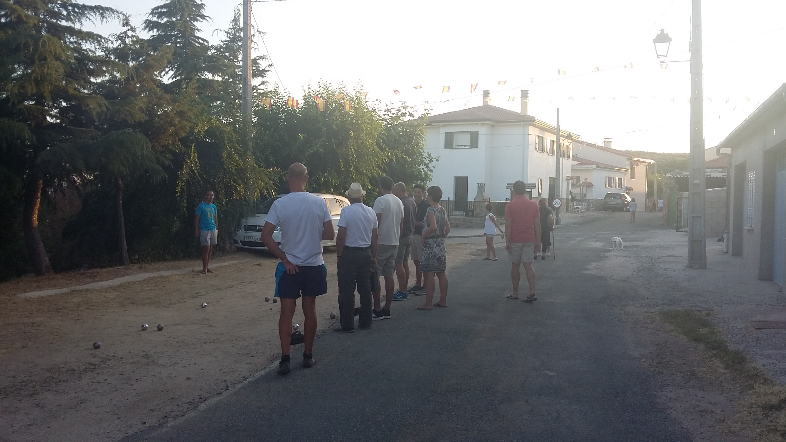
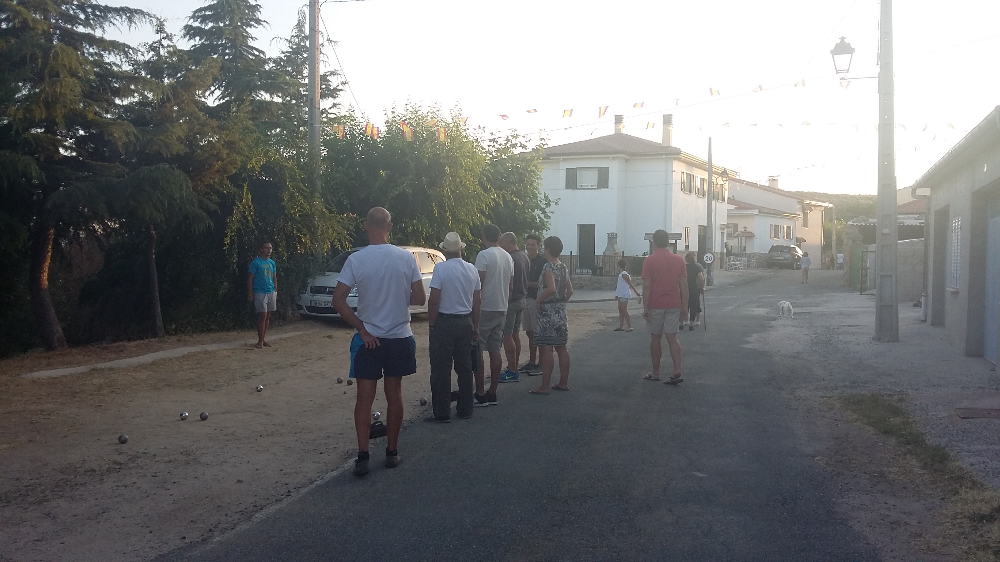
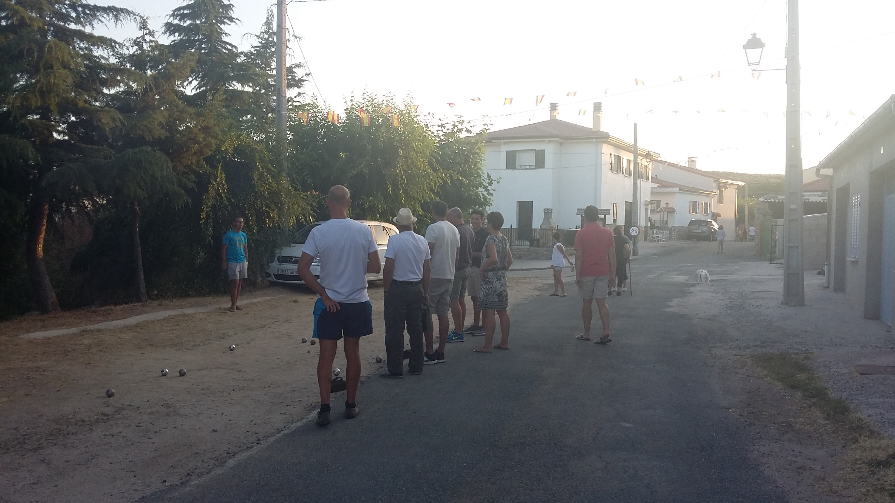
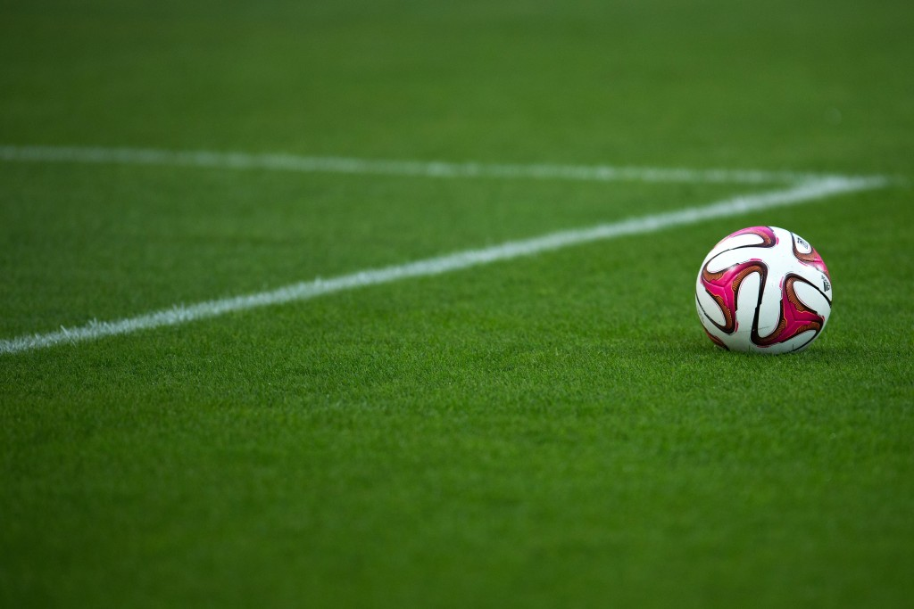
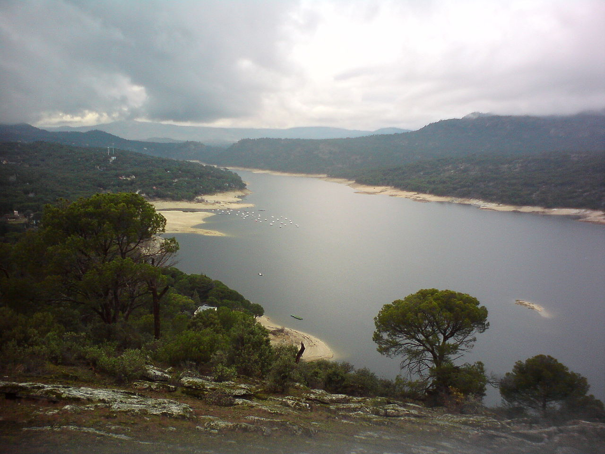

Les choses à faire dans le village:
La pétanque
si tu ne sais pas jouer à la pétanque, pas la peine de venir à Navaq, tu ne seras pas le bienvenue ☺
 

si tu ne sais pas jouer à la pétanque, pas la peine de venir à Navaq, tu ne seras pas le bienvenue ☺

Le meilleur sport de tous.. bon d'accord le terrain n'est pas le meilleur et nous n'avons plus qu'un panier mais il est quand même possible de jouer à condition que vous connaissiez quelques jeux (Lucky-Luke, 21, STOP...).


Jouez au foot à la nava ou au terrain du village
Si vous aimez seulement supporter votre équipe sur le banc de touche, vous avez toujours la possibilité de regarder de nombreux matchs retransmis en direct sur la place


Cette course, organisée par l'association se déroule après les fêtes, autour du 17-18 août. 6 km sont à parcourir, accessible à tous, amateurs et professionnels; d'ailleurs il n'est plus possible de la gagner si vous êtes un coureur aguerri car depuis quelques années des professionnels de Madrid se déplacent juste pour la gagner. Cependant il est toujours agréable de courir en altitude avec un tel paysage !!


Découvrez autour du repas du village le plat traditionnel espagnol, la paella.

De nombreux jeux d'enfants sont organisés sur la place, au programme, élections du meilleur déguisement, une soirée mousse...


Rafraîchissez vous au bord des piscines de Burgohondo et d'Hoyocasero


Il a dit une chanson célèbre des années 80 qu'à Madrid il n'y a pas de plage. Rien n'est plus éloigné de la réalité. Il ne peut pas être baigné dans les eaux salées, mais il existe. La "plage de Madrid" est dans le réservoir de San Juan, entouré d'un beau paysage. C'est un endroit fantastique pour profiter d'une journée "plage", se reposer sur le sable, faire un plongeon ou naviguer tranquillement en kayak, paddle ou même en bateau à moteur. C'est le seul endroit de la région où il est permis de pratiquer des activités nautiques motorisées.

Enfin, si vous souhaitez vous divertir dans des zones urbaines, vous avez toujours la possibilité de vous évader dans la capitale espagnole. Découvrez par exemple le magnifique palais royal:


Si avec toutes ses activités vous trouvez encore du temps pour vous ennuyer, vous pouvez effectuer des balades à dos d'ânes et ainsi admirer le paysage

Si vous n'aimez pas les ânes tentez l'aventure sur un dos de... taureau ☺